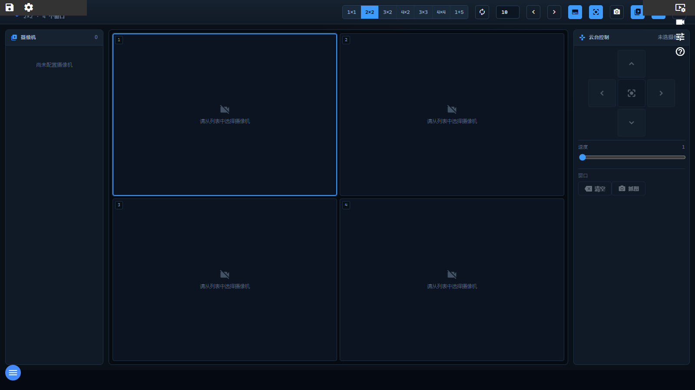

视频墙是全站摄像机的集中监视页：支持 7 种多画面布局（1×1、2×2、3×2、4×2、3×3、4×4、1+5），可给每个窗口指派摄像机，开启自动轮巡循环切换画面，叠加 OSD 字幕与 AI 检测框，并对支持云台的摄像机进行方向 / 变倍 / 聚焦 / 光圈 / 预置点控制。所有按钮在不支持的功能上会自动降级（禁用或提示），不会报错。

图 2-1 视频墙页面（当前交付版实际截图）
| 区域 | 说明 |
|---|---|
| ① 顶部品牌区 | 「视频墙」标题 + 副标题「当前布局名 · N 个窗口」（如「2×2 · 4 个窗口」）。 |
| ② 布局选择器 | 一排布局按钮：1×1 / 2×2 / 3×2 / 4×2 / 3×3 / 4×4 / 1+5。默认 2×2；「1+5」为左上 2×2 大画面 + 周围 5 个小窗。当前布局按钮高亮。 |
| ③ 工具按钮组 | 依次为：自动轮巡（autorenew，开启后高亮）+ 轮巡间隔秒数输入框（3～120，默认 10 秒）；上一个 / 下一个摄像机（左右箭头，手动轮换画面）；OSD 字幕（subtitles，开关）；AI 检测框（center_focus_strong，开关，叠加 AI 识别框）；抓图（photo_camera，保存当前画面截图）；摄像机列表（video_library，开关左栏）；操作盘（gamepad，开关右栏）；全屏（fullscreen）。 |
| ④ 摄像机列表（左栏） | 每行一个摄像机：状态灯（绿=启用）、名称、厂商标签、AI 徽标（启用了 AI 分析的摄像机显示「AI」）。顶部显示摄像机总数。 |
| ⑤ 画面矩阵（中央） | 按所选布局分格显示实时视频；被选中的窗口带高亮边框；OSD 开启时每窗左上角显示序号；未指派摄像机的窗口显示「请从列表中选择摄像机」。 |
| ⑥ 云台控制盘（右栏） | 顶部显示当前选中摄像机名称；下方为方向键盘（上/下/左/右按住转动，中间按钮停止）、变倍 / 聚焦 / 光圈按钮组（摄像机镜头支持时显示）、速度滑条（1～8）、预置点 1～6 按钮组，以及窗口操作「清空」「抓图」。 |